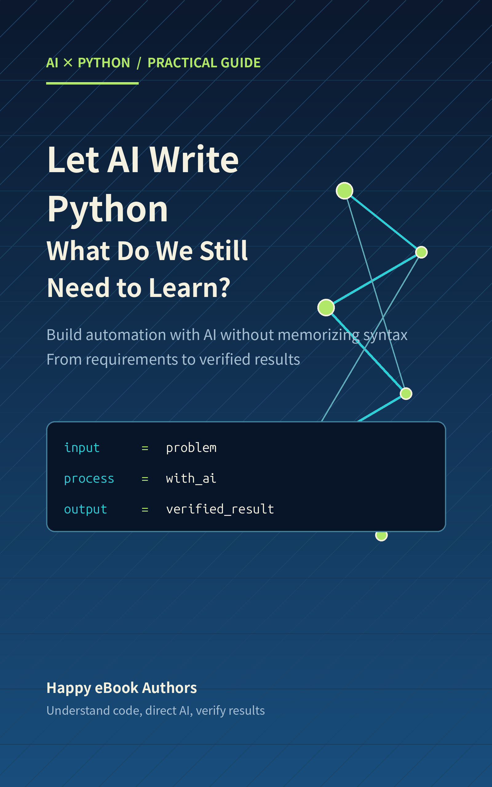

電子書
Let AI Write Python: What Do We Still Need to Learn?
電子書介紹

Let AI Write Python: What Do We Still Need to Learn?
電子書介紹
《Let AI Write Python: What Do We Still Need to Learn?》是由 Happy eBook Authors 撰寫的電子書，提供完整實作與學習內容。
這本書適合誰？
這本書適合已經會寫一點 Python、也試過讓 AI 幫你產生程式碼的學習者。當「程式跑得出來」不再是最難的事，真正需要補上的反而是看懂、驗證與除錯的能力——這正是本書要處理的問題。
你會學到什麼
- 把 AI 產生的程式當成草稿：先逐行說出意圖，再決定要不要放進自己的專案。
- 設計可檢查的輸入與預期輸出，用小資料驗證結果，而不是只看畫面好像對了。
- 從錯誤訊息反推型別、路徑與資料格式問題，把除錯變成可累積的經驗。
- 建立人機分工：讓 AI 處理重複與樣板，自己保留需求定義與最終驗收。
怎麼搭配本站內容
本站的〈完全不會寫程式，可以用 Codex 學 Python 嗎？〉用 20 行以內的小程式示範同一個學習循環；這本英文書可作為進階阅读，把 習慣 延伸到自己的練習專案。
In English: What should humans still learn once AI can write Python? A practical reading guide on reviewing generated code, designing checkable tests, debugging with evidence, and keeping human ownership of requirements and acceptance. An original reading guide by Happy eBook.